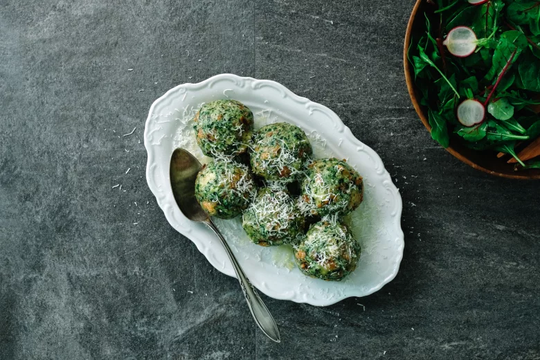

Spinatknödel

Description
Spinatknödel is a spinach dumpling from Tyrol that is usually served as a side dish. It provides an inventive way of using up leftover stale bread, which is combined with a combination of spinach, eggs, butter, garlic or onions, and cheese, preferably parmesan. After they have been boiled, the dumplings are traditionally drizzled with melted butter and sprinkled with grated cheese.
Ingredients
- 250 g bread cubes
- 125 ml milk
- 2 eggs
- 50 g grated cheese (piquant)
- 250 g strained spinach
- 80 g butter/clarified butter
- 120 g finely chopped onion
- 15 g garlic
- Breadcrumbs
- Melted butter
- Parmesan cheese
Steps
- Cut the dried white bread (stale rolls) into cubes and assemble them in a large bowl. Pour some warm milk over the bread cubes and season with salt. Stir in beaten eggs and let soak for a few minutes. Add the grated cheese and spinach and mix well to blend all the ingredients. In a skillet, melt the butter and sauté the finely chopped onion until golden brown. Add the garlic to the onions and continue to sauté for a short time. Eventually, add the butter-garlic-onion-mixture to the dough and stir together. Knead well and allow to rest for 30 minutes.
- Check whether the dough consistency is right after kneading: Try to form the mixture into balls. If they hold together well, you’re good to go. If the dough is too soft and thin and doesn't hold together well, add some breadcrumbs. If the dough is too dry, add more milk or eggs. With your hands, form the dumpling mixture into balls and simmer over low heat for about 25 minutes. (Strongly recommended: Prepare the dumplings in a steam cooker. They are so yummy!)
- Heat the butter in a pan until lightly brown and grate the Parmesan cheese. Drizzle dumplings with melted butter on top, sprinkle with grated Parmesan and enjoy!